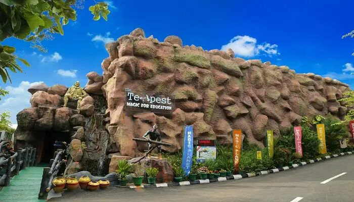
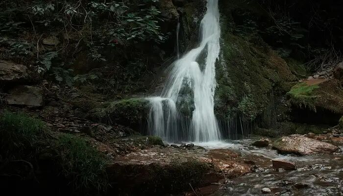

Thiruvananthapuram or Trivandrum as the city is popularly known for its riveting natural beauty and stunning architectural marvels. The city is popular for its rich cultural and religious heritage. You’ll find some really amazing places to visit in Trivandrum that will not only make your trip worthwhile but will also give you a fair idea about the enthralling cultural structure of the city. Trivandrum is the capital city of Kerala and is one of the largest cities in the state. The city is popular for its alluring beaches and elegant British architectural designs which can be found all over the city. The city has great vibes and is a captivating tourist attraction. While each place here is worth a visit, a number of them will undoubtedly leave you spellbound.
Top 3 places to visit in Thiruvananthapuram
Napier Museum
Amongst the best tourist places in Trivandrum for one day trip, Napier Museum has to be on your list. It was built by a British officer named Napier in the mid of 19th century. The museum is an important art and cultural centre in Trivandrum. It is the best place to learn about the extremely rich culture and historic heritage of state of Kerala.
The museum houses some incredible sculptures and coins from different eras of Kerala. One of the best parts, is the alluring musical instruments from different parts and eras of Kerala. It is situated close to the city’s zoo. There is an entrance fee of INR 20 per individual.
Location: LMS Vellayambalam Road, Near, Museum Junction, Kanaka Nagar, Nanthancode, Trivandrum, Kerala 695033
Entry fee: INR 20 per person
Timings: 10:00 AM to 4:30 PM, closed on Mondays
Magic Planet

Magic Museum has a very unique concept, it’s centered around magic and an absolute joy for kids in Trivandrum. It claims to be the world’s first magic-themed park that is emerging amongst the prime places to visit in Trivandrum with family. The museum is a fascinating display of many segments of street magic, performances and tricks such as The Indian Mango Mystery and The Indian Basket Trick. Tracing back the origin of magicians and the take on magic, this place will surely cast a magic spell on you. The target audience for making this museum was the kids. While kids absolutely love this place, it surely doesn’t fail to surprise the adults. They even have puppet shows, balloon twisting which keep the kids engaged. As they say, magic is for everyone. It is a go-to place for a family outing in Trivandrum.
Location: Magic Planet Kinfra Film and Video Park Sainik School, PO, Thiruvananthapuram, Kerala 695585
Entry fee: INR 490 average cost per person , free for kids
Timings: 10:00 AM – 5:00 PM, Closed on Monday
Aruvi Waterfalls

If you are more of a peace and nature lover, Aruvi Waterfalls is the perfect place for you. The Aruvi Waterfalls is located near the Bonacaud Estate and located in the thick forest of Peppara Forest Range. You will have to cover a 7 km trek in the forest to reach the waterfall. The sound of the water gushing and the peace of the surroundings will make you fall completely for this place.
You can also enjoy a wonderful camping experience near this waterfall. The falls can be reached by a trek from Bonacaud. From here, the visitors will be guided by the Kanni tribal men through the mountains. Good physical fitness is required to finish this trek. Prior forest pass from the Neyyar Wildlife Sanctuary is required to enter the forest.